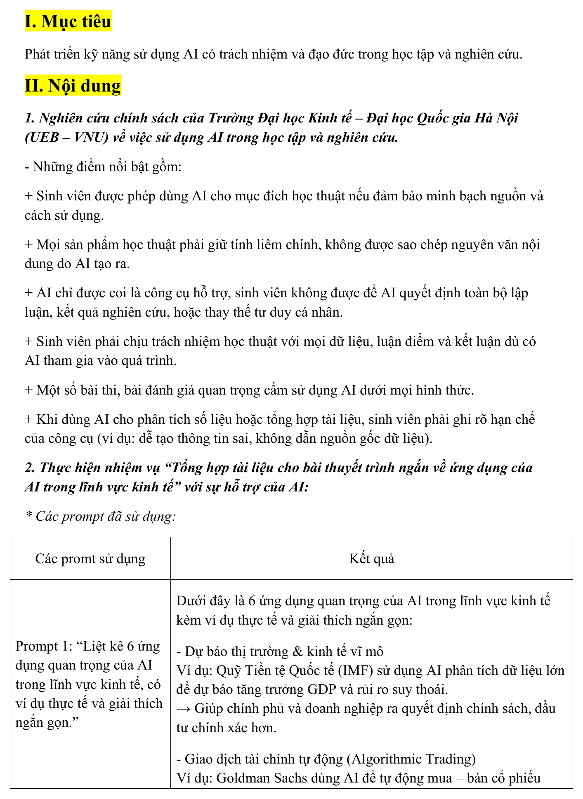
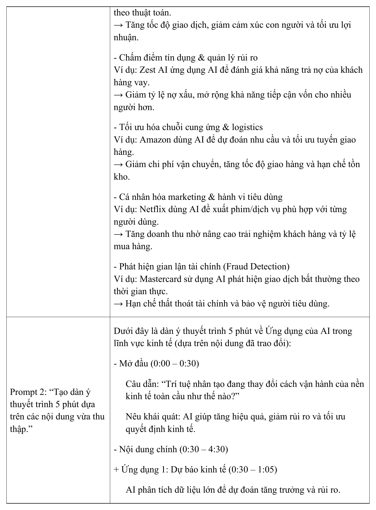
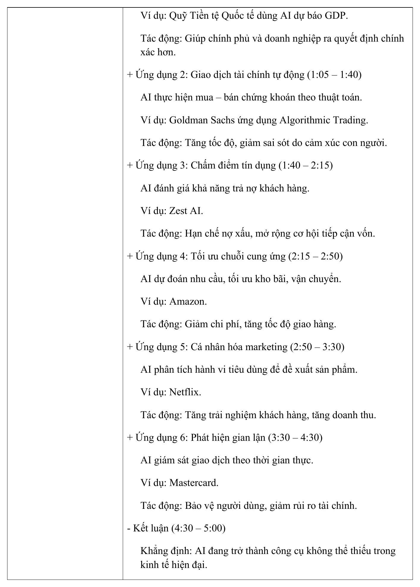
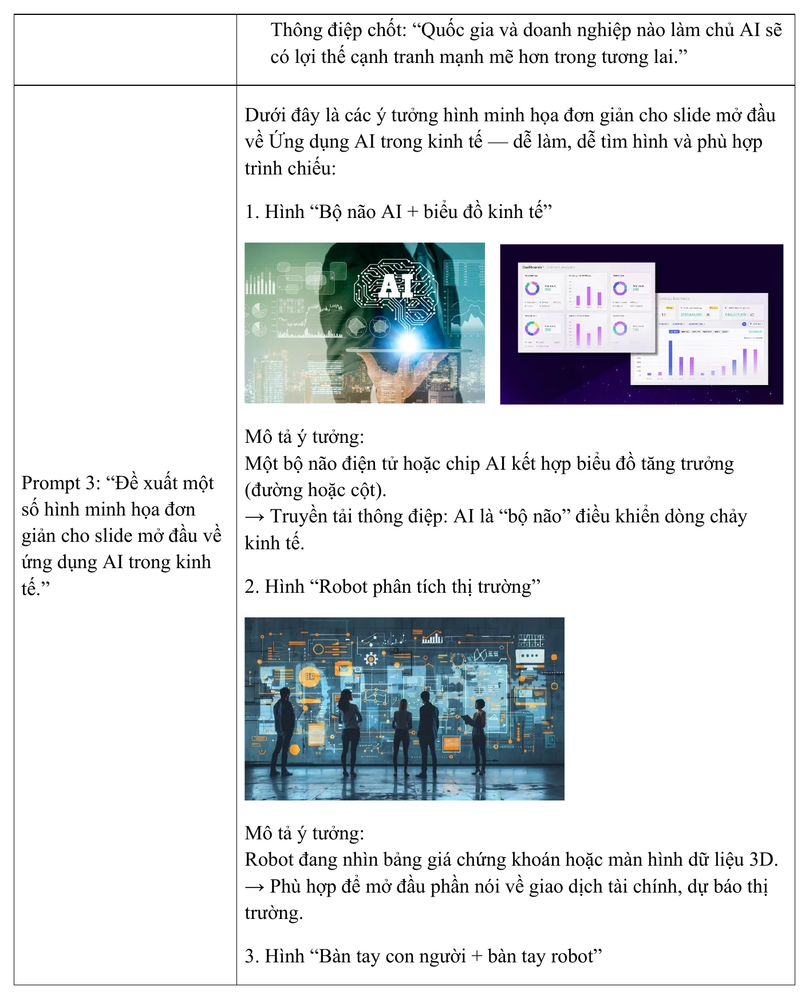
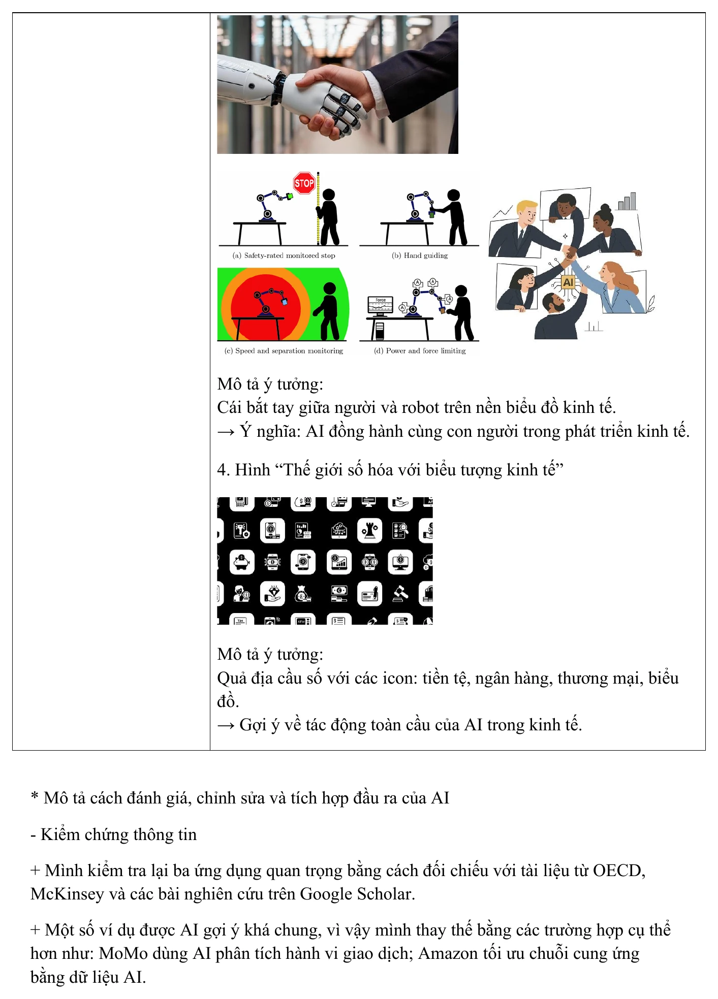
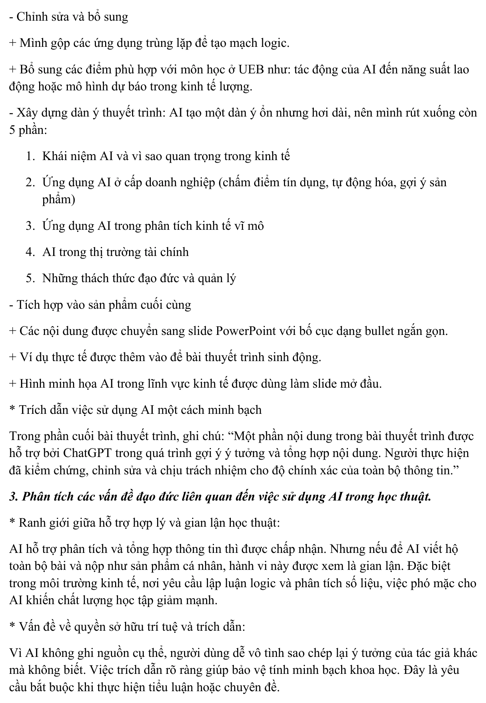
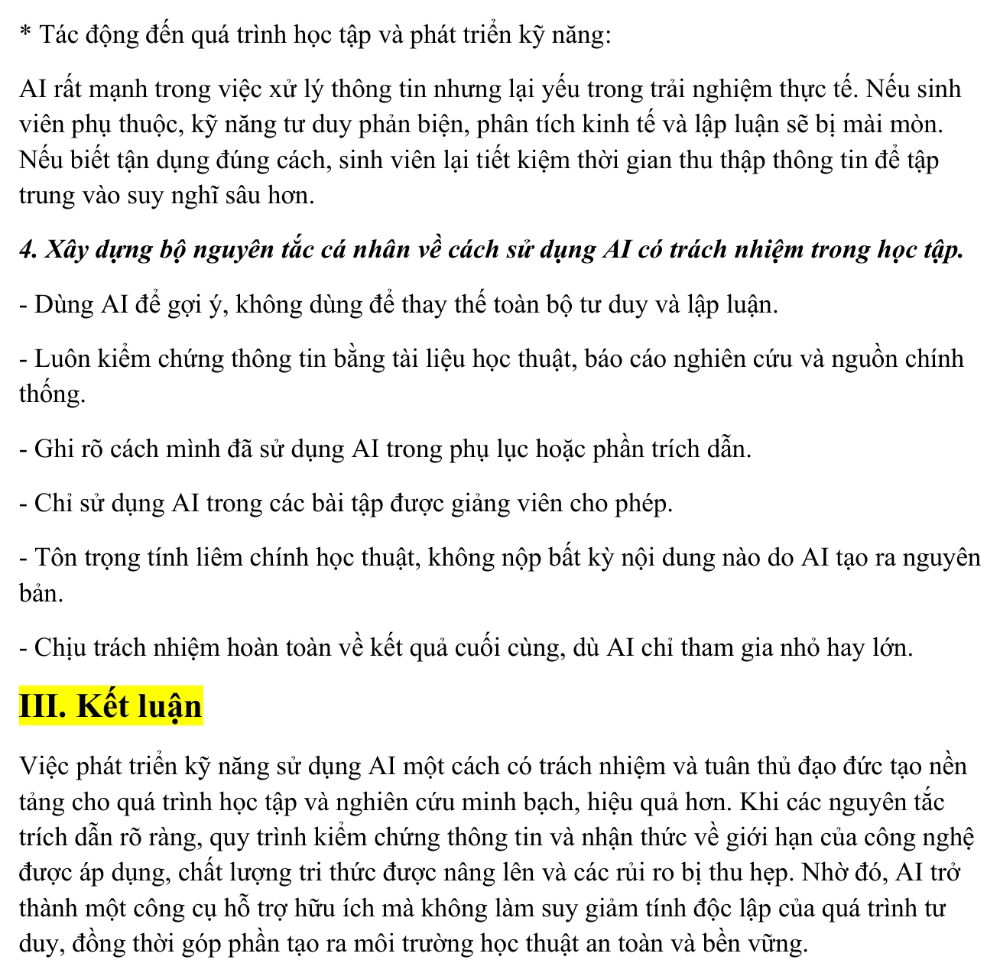

Năng lực cần hình thành
Bài tập giúp mình phát triển khả năng sử dụng AI một cách minh bạch, có kiểm soát và phù hợp với yêu cầu liêm chính học thuật. Trọng tâm không chỉ là khai thác lợi ích của công cụ, mà còn là nhận diện giới hạn, kiểm chứng đầu ra và chịu trách nhiệm đối với sản phẩm cuối cùng.
Mục tiêu cụ thể
- Tìm hiểu các nguyên tắc và giới hạn khi sử dụng AI trong học tập, nghiên cứu và đánh giá học phần.
- Phân biệt việc dùng AI để hỗ trợ ý tưởng, tổng hợp thông tin với hành vi để AI thay thế toàn bộ tư duy và lập luận cá nhân.
- Sử dụng AI để xây dựng nội dung cho một bài thuyết trình ngắn về ứng dụng của AI trong lĩnh vực kinh tế.
- Biết kiểm chứng thông tin, thay thế ví dụ chung chung và điều chỉnh đầu ra cho phù hợp với bối cảnh học tập tại UEB.
- Biết công khai vai trò của AI trong sản phẩm và ghi nhận phần nội dung được công cụ hỗ trợ.
- Xây dựng bộ nguyên tắc cá nhân về kiểm chứng, bản quyền, bảo vệ dữ liệu, minh bạch và trách nhiệm học thuật.
Các bước thực hiện
Quá trình được triển khai theo sáu giai đoạn: tìm hiểu nguyên tắc, thiết kế Prompt, tổng hợp nội dung, kiểm chứng thông tin, xây dựng sản phẩm và đánh giá những vấn đề đạo đức liên quan.
Tìm hiểu nguyên tắc sử dụng AI trong học thuật
Mình tổng hợp các nguyên tắc liên quan đến minh bạch, trách nhiệm học thuật, quyền tự chủ trong tư duy và giới hạn sử dụng AI trong các bài thi hoặc nhiệm vụ đánh giá.
Nội dung cốt lõi là AI chỉ được xem như công cụ hỗ trợ. Người học không được sao chép nguyên văn đầu ra, không để AI quyết định toàn bộ lập luận và phải chịu trách nhiệm với dữ liệu, nhận định và kết luận.
Thiết kế nhiệm vụ và hệ thống Prompt
Nhiệm vụ được lựa chọn là tổng hợp tài liệu cho một bài thuyết trình ngắn về ứng dụng của AI trong kinh tế. Ba Prompt lần lượt yêu cầu AI: liệt kê các ứng dụng quan trọng, xây dựng dàn ý năm phút và gợi ý hình minh họa cho slide mở đầu.
Cách chia nhỏ yêu cầu giúp theo dõi rõ vai trò của AI ở từng giai đoạn và thuận tiện hơn khi kiểm tra đầu ra.
Tổng hợp các ứng dụng của AI trong kinh tế
AI đề xuất sáu nhóm ứng dụng: dự báo kinh tế, giao dịch tài chính tự động, chấm điểm tín dụng, tối ưu chuỗi cung ứng, cá nhân hóa marketing và phát hiện gian lận.
Mỗi ứng dụng được gắn với một ví dụ thực tế và phần giải thích về giá trị kinh tế, giúp nội dung dễ chuyển thành bài thuyết trình.
Kiểm chứng và chỉnh sửa đầu ra
Các thông tin quan trọng được đối chiếu với tài liệu từ OECD, McKinsey và các bài nghiên cứu trên Google Scholar. Những ví dụ còn chung được thay bằng trường hợp cụ thể hơn, như ứng dụng AI trong phân tích giao dịch hoặc tối ưu chuỗi cung ứng.
Mình cũng gộp các ý trùng lặp, bổ sung nội dung phù hợp với ngành Kinh tế phát triển và rút gọn câu chữ để tránh phụ thuộc vào đầu ra nguyên bản.
Xây dựng dàn ý và sản phẩm trình bày
Dàn ý ban đầu do AI đề xuất được rút xuống năm phần: khái niệm và vai trò của AI, ứng dụng ở cấp doanh nghiệp, phân tích kinh tế vĩ mô, thị trường tài chính và thách thức đạo đức.
Nội dung được chuyển sang dạng gạch đầu dòng ngắn, bổ sung ví dụ thực tế và hình minh họa để hình thành sản phẩm trực quan về AI trong kinh tế.
Ghi nhận vai trò AI và đánh giá đạo đức
Phần cuối sản phẩm có tuyên bố rõ rằng ChatGPT được sử dụng để gợi ý ý tưởng và hỗ trợ tổng hợp nội dung; người thực hiện đã kiểm chứng, chỉnh sửa và chịu trách nhiệm về độ chính xác.
Sau đó, mình phân tích ranh giới giữa hỗ trợ hợp lý và gian lận học thuật, vấn đề trích dẫn, quyền sở hữu trí tuệ, bảo vệ dữ liệu và nguy cơ suy giảm tư duy phản biện khi lệ thuộc vào AI.
Quá trình sử dụng AI có trách nhiệm
Phần dưới đây gồm sản phẩm infographic hoàn thiện và các minh chứng được chuyển trực tiếp từ nội dung báo cáo. Các hình thể hiện quá trình tìm hiểu nguyên tắc, thiết kế Prompt, kiểm chứng, chỉnh sửa và xây dựng bộ quy tắc sử dụng AI có trách nhiệm.
Nhấn vào từng ảnh để xem kích thước lớn.
Sản phẩm infographic hoàn thiện

Minh chứng quá trình thực hiện







Đối chiếu với yêu cầu bài tập
- Có phần tìm hiểu nguyên tắc và giới hạn sử dụng AI trong học tập, nghiên cứu.
- Có hệ thống Prompt và đầu ra cho nhiệm vụ tổng hợp tài liệu về AI trong kinh tế.
- Có bước kiểm chứng thông tin bằng nguồn học thuật và thay thế những ví dụ chưa phù hợp.
- Có quá trình rút gọn, chỉnh sửa và tích hợp đầu ra thành sản phẩm cuối.
- Có tuyên bố minh bạch về vai trò hỗ trợ của ChatGPT.
- Có phân tích vấn đề đạo đức và bộ nguyên tắc cá nhân khi sử dụng AI.
Những gì đạt được
Sau bài thực hành, mình hiểu rõ hơn rằng sử dụng AI có trách nhiệm không chỉ là ghi chú tên công cụ, mà là một quy trình gồm xác định phạm vi, kiểm chứng đầu ra, chỉnh sửa độc lập, công khai mức độ hỗ trợ và chịu trách nhiệm với sản phẩm cuối.
- Nhận thức AI là công cụ hỗ trợ, không thay thế tư duy và quyết định học thuật của người học.
- Tổng hợp được sáu ứng dụng chính của AI trong lĩnh vực kinh tế.
- Xây dựng được dàn ý thuyết trình ngắn và hệ thống hình minh họa phù hợp.
- Biết kiểm tra, rút gọn và điều chỉnh đầu ra trước khi tích hợp vào sản phẩm.
- Biết ghi nhận vai trò của AI bằng một tuyên bố minh bạch trong sản phẩm học tập.
- Nhận diện được rủi ro liên quan đến sai lệch, thiếu nguồn, bản quyền, quyền riêng tư và phụ thuộc công nghệ.
- Hình thành bộ nguyên tắc cá nhân cho việc sử dụng AI trong học tập và nghiên cứu.
Phân định trách nhiệm giữa AI và người học
| Giai đoạn | AI có thể hỗ trợ | Người học phải chịu trách nhiệm |
|---|---|---|
| Hình thành ý tưởng | Gợi ý chủ đề, câu hỏi, cấu trúc và hướng tiếp cận. | Lựa chọn mục tiêu, phạm vi và giá trị học thuật của nhiệm vụ. |
| Tổng hợp thông tin | Tạo bản nháp, liệt kê khái niệm và gợi ý ví dụ. | Kiểm chứng nguồn, loại thông tin sai và bổ sung tài liệu gốc. |
| Viết và trình bày | Gợi ý dàn ý, cách diễn đạt và hình minh họa. | Viết lại, chỉnh sửa, bảo đảm logic và giữ quan điểm cá nhân. |
| Nộp sản phẩm | Không thay thế trách nhiệm học thuật của tác giả. | Công khai cách dùng AI và chịu trách nhiệm với toàn bộ nội dung. |
Phân tích và nguyên tắc sử dụng AI
Ranh giới giữa hỗ trợ hợp lý và gian lận học thuật
AI có thể hỗ trợ người học tìm ý tưởng, gợi ý cấu trúc, giải thích khái niệm hoặc phản biện một bản nháp. Tuy nhiên, việc để AI viết toàn bộ bài, tạo ra lập luận chính và nộp nguyên bản như sản phẩm cá nhân làm mất tính trung thực và giá trị của quá trình học tập.
Trong các môn kinh tế, lập luận, phân tích số liệu và khả năng giải thích quan hệ nguyên nhân – kết quả là năng lực cốt lõi. Nếu phụ thuộc quá mức, người học có thể hoàn thành sản phẩm nhanh hơn nhưng không thực sự phát triển kỹ năng chuyên môn.
Bộ nguyên tắc cá nhân
- Dùng AI để hỗ trợ, không thay thế tư duy: tự xác định vấn đề và lập luận chính trước khi yêu cầu công cụ góp ý.
- Kiểm chứng thông tin: đối chiếu dữ liệu, ví dụ và kết luận với tài liệu học thuật, báo cáo nghiên cứu hoặc nguồn chính thống.
- Không sử dụng nguyên bản đầu ra: đọc, hiểu, viết lại và bổ sung phân tích cá nhân.
- Minh bạch cách sử dụng: ghi rõ AI đã hỗ trợ ở khâu gợi ý, tổng hợp, chỉnh sửa hay tạo hình ảnh.
- Tuân thủ yêu cầu của giảng viên: không sử dụng AI trong bài thi hoặc nhiệm vụ bị cấm.
- Tôn trọng bản quyền: kiểm tra nguồn và quyền sử dụng đối với nội dung, dữ liệu và hình ảnh.
- Bảo vệ dữ liệu: không nhập thông tin cá nhân, dữ liệu nghiên cứu chưa công bố hoặc tài liệu mật vào công cụ AI.
- Chịu trách nhiệm cuối cùng: người nộp bài chịu trách nhiệm cho mọi sai sót, dù AI tham gia ở mức độ nào.
Thách thức và cách xử lý
| Thách thức | Rủi ro | Cách xử lý |
|---|---|---|
| Thông tin sai hoặc không có nguồn | Đưa dữ liệu thiếu chính xác vào bài học thuật. | Kiểm tra tài liệu gốc và đối chiếu ít nhất hai nguồn đáng tin cậy. |
| Sao chép đầu ra AI | Vi phạm liêm chính và không phản ánh năng lực thật. | Viết lại bằng hiểu biết cá nhân, bổ sung lập luận và trích dẫn phù hợp. |
| Thiếu minh bạch | Người đọc hiểu sai về mức đóng góp của tác giả. | Thêm tuyên bố sử dụng AI và lưu lại những Prompt quan trọng. |
| Rò rỉ dữ liệu | Mất quyền riêng tư hoặc vi phạm bảo mật nghiên cứu. | Ẩn danh dữ liệu và không nhập thông tin nhạy cảm vào công cụ. |
| Phụ thuộc vào công nghệ | Suy giảm tư duy phản biện và kỹ năng lập luận. | Tự xây dựng bản nháp trước, dùng AI để phản biện hoặc mở rộng. |
Tuyên bố sử dụng AI trong sản phẩm
Một phần nội dung trong sản phẩm được ChatGPT hỗ trợ ở giai đoạn gợi ý ý tưởng và tổng hợp thông tin. Toàn bộ nội dung đã được người thực hiện kiểm chứng, chỉnh sửa và chịu trách nhiệm về độ chính xác, cách diễn đạt và kết luận cuối cùng.
Sản phẩm đầy đủ
Báo cáo PDF trình bày các nguyên tắc sử dụng AI, hệ thống Prompt, quá trình kiểm chứng và chỉnh sửa, phân tích vấn đề đạo đức cùng bộ nguyên tắc cá nhân. Nếu trình duyệt không hiển thị khung xem trước, hãy dùng nút mở PDF.